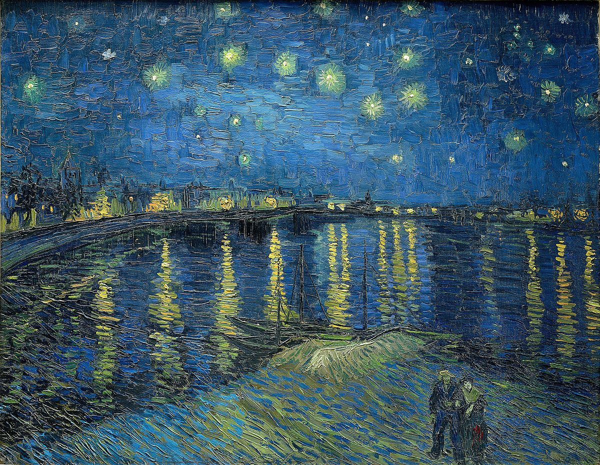
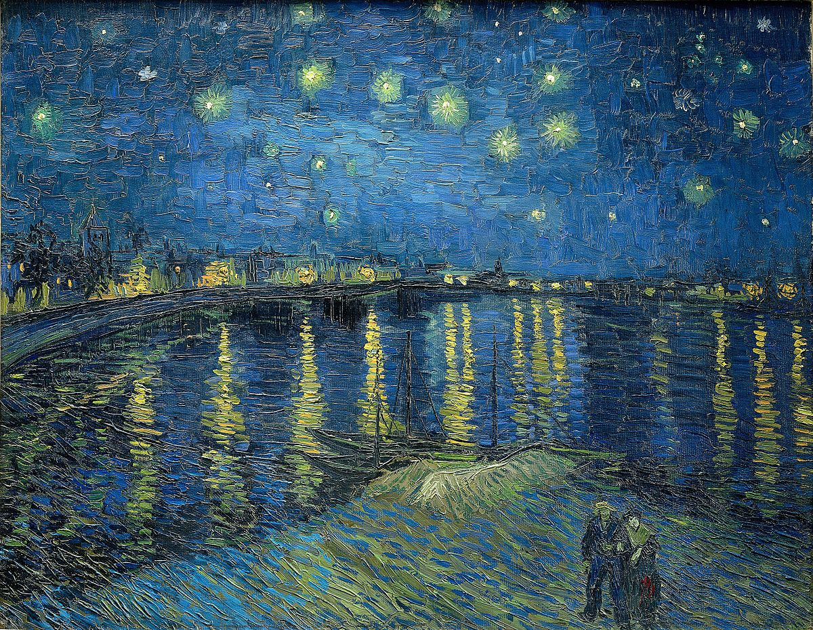

Orsay
Scroll Down


The Orsay Museum
The Musée d'Orsay is a world-renowned art museum located in the heart of Paris, France, on the left
bank of the Seine River. Housed in the former Gare d'Orsay, a Beaux-Arts railway station built
between 1898 and 1900, the museum was officially opened in December 1986. The transformation of the
station into a museum was a masterful conversion project that has been hailed as a brilliant example
of innovative adaptation of architectural heritage to modern purposes.
The Musée d'Orsay is famous for holding the largest collection of impressionist and
post-impressionist masterpieces globally. Its collections span from the mid-19th century to the
early 20th century (1848-1914), showcasing the diverse and dynamic period of artistic transition,
innovation, and experimentation that led to the birth of modern art.
The museum's extensive collection includes paintings, sculptures, furniture, and photography. Among
its most celebrated works are masterpieces by painters such as Édouard Manet, Claude Monet,
Pierre-Auguste Renoir, Vincent van Gogh, and Paul Gauguin. Iconic pieces include Monet’s "Blue Water
Lilies," Van Gogh's "Starry Night Over the Rhone," and Renoir's "Dance at Le Moulin de la Galette,"
among others.
Beyond its impressive collections, the Musée d'Orsay itself is an architectural marvel, with its
grand clock and beautiful, airy galleries that allow natural light to illuminate the artworks. The
museum not only serves as a pivotal cultural institution in Paris but also as a significant venue
for understanding the evolution of art from the traditional to the modern, capturing the
revolutionary spirit of the turn of the century.
Visitors to the Musée d'Orsay are treated not just to a visual feast of art but also to a historical
journey through a pivotal era in art history, making it an essential visit for art lovers and those
interested in the cultural heritage of France.
Collections


 


Paris
the City of Romance
Paris, the capital and most populous city of France, is globally renowned for its art, fashion,
gastronomy, and culture. Its 19th-century cityscape is crisscrossed by wide boulevards and the River
Seine, and is marked by landmarks like the Eiffel Tower, Notre-Dame Cathedral, and the 12th-century,
Gothic Sainte-Chapelle. The city is also known for its cafe culture and the bookshops lining the Seine’s
Left Bank.
Founded in the 3rd century BC by a Celtic people called the Parisii, the city has been a major center of
finance, diplomacy, commerce, fashion, science, and the arts for many centuries. Paris is often referred
to as "The City of Light" (La Ville Lumière), a title it owes both to its leading role during the Age of
Enlightenment and to its early adoption of street lighting.
Paris houses several of the world's most important museums and art galleries, with the Louvre being the
most visited art museum in the world. Other significant cultural landmarks include the Musée d'Orsay and
the Musée de l'Orangerie, known for their impressive collections of French Impressionist art, and the
Pompidou Centre, celebrated for its collection of modern and contemporary art.
The city's educational and research institutions continue to contribute to its status as a global hub
for higher education and research. Paris is also a major international air transport hub with the
Charles de Gaulle Airport being one of the busiest in the world.
Paris's influence in politics, education, entertainment, media, fashion, science, and the arts all
contribute to its status as one of the world's major global cities. Moreover, Paris is known for its
annual fashion weeks which are significant events for the global fashion industry. With its rich
history, cultural heritage, and vibrant contemporary scene, Paris continues to captivate millions of
visitors each year, making it one of the most visited cities in the world.